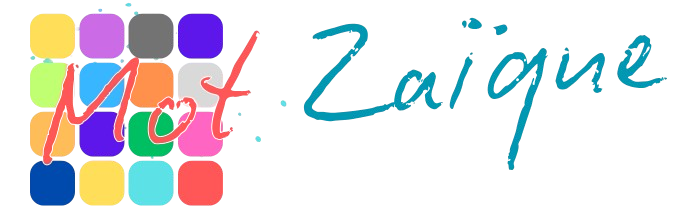

Téléchargements
Vous trouverez ci-dessous les liens de téléchargement vers les différentes version de l'application compilée sous forme d'APK. Quand sa phase de dévelopemment sera finie, elle sera à terme publiée sur le playstore, en accès libre et gratuit.
Dropbox
Ce projet vous est proposé par FLORENCON Alycia, BRUGUIER–FORAY Julien, FRACES BOU Roméo ainsi que MEYNADIER Axel.